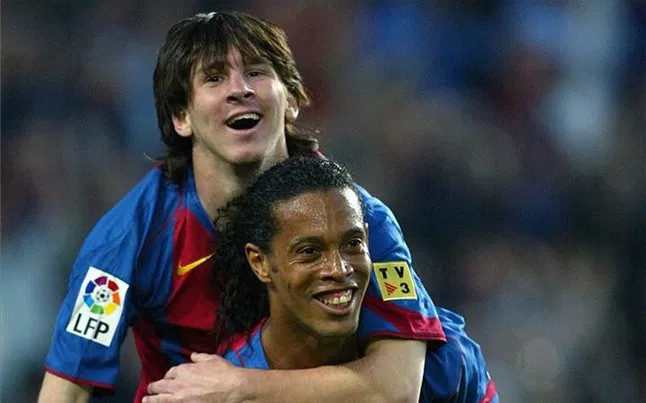

Naš najdraži sport
Nogomet - Najpopularniji sport na svijetu

O sportu
Nogomet, poznat i kao "kralj sportova", je globalni fenomen koji spaja ljude svih uzrasta i kultura. Igra se na svim kontinentima i u svakom kutku svijeta – od prašnjavih ulica do svjetskih stadiona. Ono što ga čini posebnim je jednostavnost pravila, potreba za minimalnom opremom i ogromna strast koju budi kod igrača i gledatelja.
Povijest nogometa seže daleko u prošlost. Slične igre loptom igrale su se još u starom Egiptu, Kini i Grčkoj, no moderni nogomet kakvog danas poznajemo oblikovao se u Engleskoj tijekom 19. stoljeća. Godine 1863. osnovan je Engleski nogometni savez (The Football Association), koji je prvi put službeno zapisao pravila igre i tako stvorio temelj za današnji sport. Nogomet se ubrzano širio Europom i ostatkom svijeta, postajući sve popularniji.
Godine 1904. osnovana je FIFA (Međunarodna nogometna federacija), koja danas upravlja globalnim natjecanjima, uključujući i Svjetsko prvenstvo koje se prvi put održalo 1930. godine u Urugvaju. Od tada, nogomet je postao više od igre – simbol zajedništva, natjecanja i strasti.
FIFA [SVG]
Među najvećim i najpoznatijim nogometnim klubovima na svijetu ističu se španjolski Real Madrid i FC Barcelona, engleski Manchester United i Liverpool, talijanski AC Milan i Juventus, te njemački Bayern München. Ti klubovi imaju bogatu povijest, brojne trofeje i milijune navijača diljem svijeta. Real Madrid, primjerice, drži rekord po broju osvojenih naslova Lige prvaka, dok je FC Barcelona poznata po svojoj prepoznatljivoj igri i slavnoj nogometnoj akademiji "La Masia", koja je iznjedrila brojne vrhunske igrače.


Pravila igre
- Utakmica traje 90 minuta (2 poluvremena po 45 minuta)
- Svaka ekipa ima 11 igrača, uključujući vratara
- Lopta se smije igrati svim dijelovima tijela osim rukama (osim za vratara u svom prostoru)
- Prekršaji uključuju igranje rukom, guranje, udaranje i nesportsko ponašanje
- Sudac može dodijeliti žuti (upozorenje) ili crveni karton (isključenje)

Izgled nogometnog igrališta s rasporedom igrača
Dimenzije nogometnog igrališta: Prema pravilima FIFA-e i UEFA-e, standardna veličina nogometnog igrališta za međunarodne utakmice iznosi 105 metara u dužinu i 68 metara u širinu. Ove dimenzije osiguravaju konzistentnost i pravedne uvjete igre na svim profesionalnim terenima.
Navijačka atmosfera – FIFA Svjetsko prvenstvo: Hrvatska vs. Maroko 2022.
U borbi za treće mjesto na FIFA Svjetskom prvenstvu 2022. godine, Hrvatska se suočila s reprezentacijom Maroka. Iako nije bilo finala, atmosfera je bila dostojna velikog spektakla. Navijači su u ogromnom broju ispunili stadion i pokazali nepokolebljivu podršku svojim igračima od prve do posljednje minute utakmice.
Zvuk s tribina bio je nevjerojatan – pjesme, bubnjevi, zastave koje su vijorile na sve strane i srčano navijanje davali su dodatni vjetar u leđa hrvatskim nogometašima. Svaki dobar potez i svaki duel bio je ispraćen uzvicima podrške, a trenutak postizanja gola zabilježen je glasnim eksplozijama oduševljenja.
Ova utakmica nije bila samo borba za medalju, već i slavlje nogometa, zajedništva i ponosa. Hrvatski navijači su još jednom pokazali zašto su među najstrastvenijima na svijetu – vjerna podrška, sportski duh i ljubav prema reprezentaciji dominirali su tribinama do samog kraja susreta.
Video - Najbolji trenuci utakmice
Galerija

Dečko žonglira sa loptom [BMP]
Pele pozdravlja Ronalda [PNG]
"Škorpion" obrana gola [PNG]

Zlatanove škarice [PNG]
Dečko žonglira sa loptom [BMP]
Pele pozdravlja Ronalda [PNG]
"Škorpion" obrana gola [PNG]
Zlatanove škarice [PNG]